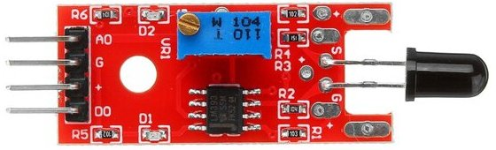
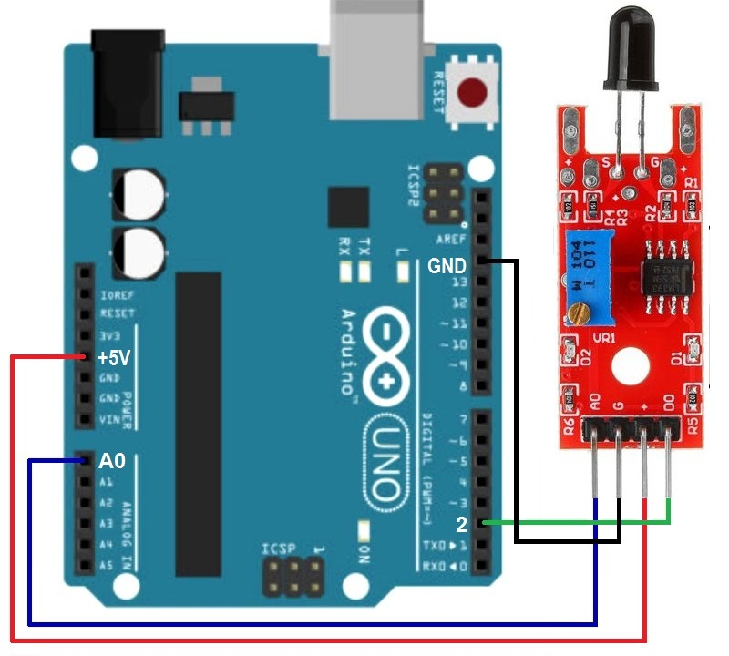

Модуль датчика пламени KY-026
Модуль KY-026 является цифроаналоговым датчиком пламени (огня, пожара). На модуле KY-026 установлен датчик, реагирующий на инфракрасное излучение с длинами волн 760 нм до 1100 нм, в следствии чего он отлично замечает открытый огонь. Также модуль имеет два красных светодиода: один горит, когда питание подаётся, другой – когда срабатывает датчик.

Модуль KY-026 имеет два выхода: один цифровой, другой – аналоговый. Их можно использовать как одновременно, так и по отдельности. Цифровой выход выдаёт логический 0 если в области видимости датчика пламени нет и логическую 1, если что-то гори. А на аналоговом выходе в случаи наличии огня стремится к нулю (~20-40), а при его отсутствии – к 5 В (1023). Датчик можно настроить подстроечным резистором.
С помощи данного модуля можно легко сделать пожарную сигнализацию.
Фотодиод соединен со входом компаратора выполненного на микросхеме LM393. С помощью подстроечного резистора выполняется настройка порога срабатывания компаратора. Так устанавливается чувствительность датчика огня.
При обнаружении пламени яркостью выше установленной при настройке на выходе D0 будет высокий уровень напряжения. Если огня нет или его яркость мала, то на выходе D0 низкий уровень. На аналоговый выход поступает усиленный сигнал фотодиода.
Светодиод D1 показывает включение питания. D2 сообщает о срабатывании датчика и формировании на выходе D0 высокого уровня.
Технические характеристики KY-026:
- Напряжение питания — 3...5,5 В.
- Дальность обнаружения огня — 1 м.
- Угол обнаружения пламени — 60°.
- Размеры — 36 ×16 мм.
Назначение выводов (рис. 1) представлено в таблице 1.
Таблица 1
| Контакт | Назначение |
|---|---|
| A0 | Аналоговый выход |
| D0 | Цифровой выход |
| + | +5 В |
| G | Общий минусовой контакт |

Источники
funnydiy.net - Датчик пламени. Модуль KY-026 для Ардуино. Обзор
umnyjdomik.ru - "KY-026" – датчик пламени инфракрасный (длина волны от 760 нм до 1100 нм)